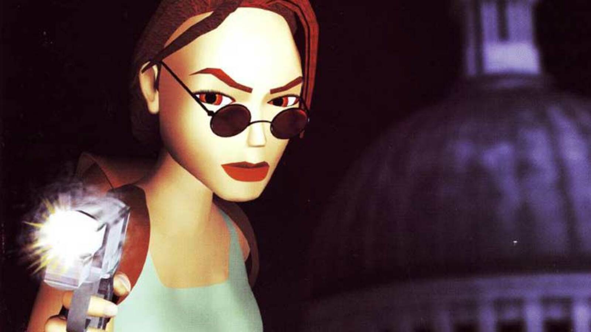

Tom Raider is a media franchise that originated with an action-adventure video game series created by British gaming company Core Design. Starring Lara as the main character, she is navigating environments and solving mechanical and environmental puzzles, in addition to fighting enemies and avoiding traps. Whether you are using a keyboard for the Windows or Macintosh game, a PlayStation controller or gamepad, you can change the controls to suit your taste. The touch controls are fairly straightforward except when you need to drop down after traversing along a narrow crevice. To do this, you must first turn off auto-grab in the Controls menu. Then hold Action to hang on as you traverse and release it to let go. Some easy commands are running which presses forward with left or right to move in that direction. Jumping which Makes Lara jump straight up. More complex jumps are covered under combo moves, below and drawing or holding a weapon which is very useful when combatting the different bosses.
